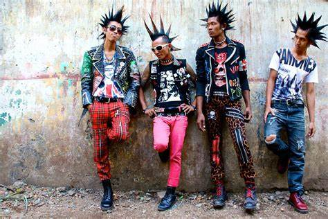

Головні особливості — нонконформізм, індивідуальний бунт проти звичних суспільних норм, зумисна спрощеність, вульгарність у поведінці, агресивність, анархізм. Для музичної творчості характерні постійна зміна інтонації, надмірне використання ударних інструментів, переважання ритму над мелодією, навмисна простота виконуваних текстів. Відповідним був зовнішній вигляд виконавців — неохайність і недбалість в одязі, різнобарвний грим, лахміття, обвішане усіляким мотлохом. Канонічним вбранням є шкіряна куртка-косуха з металевими шипами.
Термін «punk» поширився наприкінці 1975 р. в Нью-Йорку в середовищі музичного часопису Punk Magazine, перший номер якого вийшов у січні 1976 р.; належить журналістові Родерікові-Едварду «Леґс» Макнілу (нар. 1956) і початково стосувався музичних груп, які, починаючи з березня 1974-го, виступали в нововідкритому клубі CBGB у богемному кварталі Іст-віллідж — Television, Patti Smith Group, Ramones. Дуже скоро нова молодіжна субкультура, що складалася з фанів груп, котрі виконували нову музику, поширюється в Лондоні (відомі вже у 1976-му). Третім епіцентром стає Лос-Анджелес; з цим панк-рух стрімко поширюється у США, Великій Британії, Канаді, Австралії. Панк не став продовженням і не виріс із хіппі чи бітників, а є оригінальним породженням нью-йоркської сцени, черпаючи натхнення у творчості The Velvet Underground і детройтських груп MC5 і The Stooges, через що їх некоректно називають протопанковими групами. Найхарактернішим виявом американського панк-року є Ramones, британського — Sex Pistols. Хрещеною матір'ю панку називають Патті Сміт. Одним із законодавців нового стилю став музикант і письменник Річард Гелл, зокрема його сценічний імідж (порвана майка, волосся сторч) надихнув Малкольма Макларена, менеджера Sex Pistols. Фронтмен Sex Pistols (від лютого 1977) Сід Вішез вважається культовою постаттю й уособленням панку. На початку 1970-х започатковано панк-літературу, її зачинателями вважаються Патті Сміт, Річард Гелл і Джим Керролл.